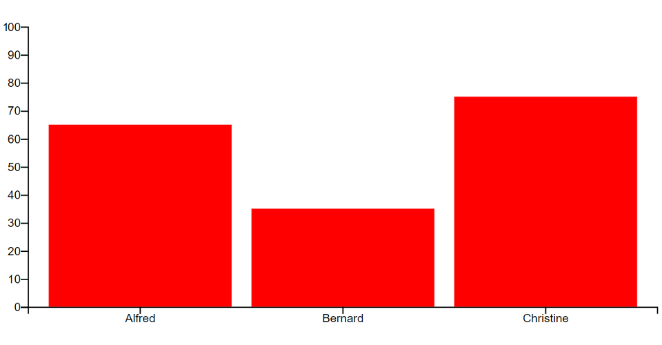
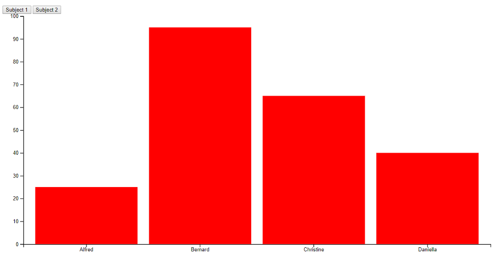

5b: Intro to D3
Objectives
- Discuss libraries beyond D3.
- Go through selection and data binding. Also: axes, domains and ranges.
- Put together a simple bar / scatterplot chart.
Why D3?
(Data Driven Documents)
It is a comprehensive framework for building any sort (almost literally) of interactive visualizations for the web.
It is however, not a simple high-level graphing template library.
One of the main design patterns in this library is binding the data to DOM elements.
Reading: D3 is not a Data Visualization Library, Elijah Meeks
How to learn D3
How to learn D3.js, Amelia Watterberger
D3 Graph Gallery, Yan Holtz
Sample libraries built on top of D3
Other charting libraries
Animation and 3D libraries
Animation
3D
Utility Libraries
D3 installation / data binding
I'll be including D3 the easiest way - embedding as a script pulled from a CDN. You can of course use npm / import and design a more modern way of scaffolding your projects.
One thing to note is that for reactivity, we'll be using D3's default data binding functions.
If you use a JS framework / compiler — Vue, React, Angular, Svelte, etc. — it is a good idea that your data binding does not clash with D3's one.
D3 code workshop
Hello World
Let's start with a simple template. We'll go through selections, which is a core component of D3.
<!DOCTYPE html>
<html>
<head>
<meta charset="UTF-8">
</head>
<body>
<script src="https://d3js.org/d3.v6.min.js"></script>
<script>
d3.select("body").append("p").text("Hello World!");
</script>
</body>
</html>
Note: We're appending a paragraph tag of "Hello World" to the body.
Hello Worlds
<div id="hellos">
<p>Hello World!</p>
<p>Hello World 2!</p>
<p>Hello World 3!</p>
</div>
<script>
d3.select("#hellos p").style("color", "green");
d3.selectAll("#hellos p").style("color", "green");
</script>
Notice the difference between the select and selectAll statements.
Data Binding
let data = [10, 20, 30];
let hellos = d3.select("#hellos");
hellos.selectAll("p")
.data(data)
.enter()
.append("p")
.text("Hello World");
Notice the design pattern: Select a bunch of elements (that don't exist), bind that to the data, and then append said elements.
One style to write javascript is to use method chaining, which is a design pattern you will see in many javascript libraries, like JQuery or Lodash. D3 also follows this style, and it makes your code more readable.
Exercise 1
let data = [
{text: "Hello World 1", size: 10, color: "green"},
{text: "Hello World 2", size: 20, color: "blue"},
{text: "Hello World 3", size: 30, color: "red"},
];
Given this dataset, can you print out each individual text, and style the elements?
Fun with transitions
hellos.selectAll("p")
.data(data)
.enter()
.append("p")
.text(d => d.text)
.transition()
.duration((d,i) => i * 1000)
.style("font-size", d => d.size + "px")
.style("color", d => d.color);
Recap: SVG
Exercise 1b
Remember how to draw shapes using SVGs?
<svg width="800" height="800"></svg>
let data = [
{x: 400, y: 700, r:150, color: "green"},
{x: 100, y: 300, r:50, color: "blue"},
{x: 850, y: 400, r:100, color: "red"}
]
Given this dataset, can you add these as circles, with the appropriate theming?
Domains and ranges
How do we map our quantitative data scale to the SVG drawing scale? Use domain / range.
let xScale = d3.scaleLinear()
.domain([0,1000])
.range([0,800]);
let yScale = d3.scaleLinear()
.domain([0,1000])
.range([800,0]);
Note that the y-axis (the range) is typically inverted.
Setup Dimensions / Margins
let margin = {top: 20, right: 20, bottom: 60, left: 60},
width = 800 - margin.left - margin.right,
height = 800 - margin.top - margin.bottom;
let chart = d3.select("svg")
.attr("width", 800)
.attr("height", 800)
.append("g")
.attr("transform", "translate(" + margin.left + "," + margin.top + ")");
let xScale = d3.scaleLinear()
.domain([0,1000])
.range([0,width]);
let yScale = d3.scaleLinear()
.domain([0,1000])
.range([height,0]);
chart.selectAll("circle")
.data(data)
.enter()
.append("circle")
.attr("cx", d => xScale(d.x))
.attr("cy", d => yScale(d.y))
.attr("r", d => d.r)
.attr("fill", d => d.color);
Add axes
chart
.append("g")
.call(d3.axisBottom(xScale));
chart
.append("g")
.call(d3.axisLeft(yScale));
Axes are added to origin point (0,0). Use a transform to translate the xAxis to the bottom of the chart.
chart
.append("g")
.attr("transform", "translate(0," + height + ")")
.call(d3.axisBottom(xScale));
Add labels
chart
.append("text")
.attr("transform", "translate(" + (width / 2) + "," + (height + 40) + ")")
.text("X-axis label")
.attr("text-align", "middle");
chart
.append("text")
.attr("transform", "translate(-40, " + (height / 2) + ") rotate(-90)")
.text("Y-axis label")
.attr("text-align", "middle");
Add colorscale
Let's map radius to a sequential colorscale.
let colorScale = d3.scaleLinear()
.domain([0, 300])
.range([0,1]);
...
.attr("fill", d => d3.interpolateViridis(colorScale(d.r)));
Event firing
Mouseover / mouseout
...
.on("mouseover", (event, d) => {
d3.select(event.currentTarget)
.attr("stroke", "black")
.attr("stroke-width", 2);
})
.on("mouseout", (event, d) => {
d3.select(event.currentTarget)
.attr("stroke", "none");
})
Do note that this event firing is syntax for the latest D3 v6. Migration docs here. Syntax for event firing is different for previous versions.
Clean-up / Ideas
Things to consider
- Group, order, and label things for you to understand if you need to inspect the SVG
- Consider moving your theming to CSS as this is easier to change.
- Consider adding legends, labels, etc.
- Consider adding interactivity for tooltips and feedback.
- You can make the SVG form factor responsive if needed.
- Transitions for the bling.
Basic D3 bar chart
Bl.ocks.org: Simple D3 bar chart
https://bl.ocks.org/chi-loong/c36e1cf66502faa45f8dd8102a5c5531
D3 bar chart 2
Transitions. Enter, update and exit design pattern
Bl.ocks.org: D3 bar chart part 2
https://bl.ocks.org/Chi-Loong/e3389dfb6873c85caf445f0faba52ec4
Assignment 2
Tabular data - D3 visualization
Setup
To be completed before 8-4-2021(Thurs) 1200hrs
- This repo link will be of the format https://<username>.github.io/HASS-assignment2
- In the forked repo create a basic index.html file, and make it visible on GitHub repo pages (it's under the settings tab, under GitHub pages).
- You can put your CSS style tags, HTML and JS script code into one file, or organize them into files/directories.
What: Dataset
- We'll be looking at a SG crime dataset - Victims of Selected Major Offences (by Age Group).
- Connect to the dataset — via API, or via download of the CSV — up to you.
- You probably have to do some data manipulation. Whether it is in the CSV or via code, it's up to you.
Why: Presentation
- Your boss has asked you to take a look at the dataset and give a short presentation on what is interesting about the dataset.
- Are there trends over the years? Outliers worth talking about? Etc.
How: Encoding
- Up to you. Do you want to put everything into one complicated chart (e.g. a scatterplot with multiple dimensions)?
- Or would you want to break into multiple charts to tell your story?
- Have a very, very simple writeup (a few lines) to justify, together with your assumptions. You probably want to do some exploration, and then decide to do at least one (or more) charts for storytelling.
- Feel free to come up with derived columns, and/or filter away data that is not interesting. E.g. rows with 0 cases.
How: Execution / Expectations
- For multiple charts on one page if you're worried about code pollution (CSS/JS) just use iFrames. Or even images / links. Am not expecting a complicated framework — e.g. JS framework componentization (unless you want to).
- Up to you how much interactivity you want to put into the piece.
- You may even prefer not to use D3 although I would suggest at least doing so for one chart (or use a library built on top of D3).
- We'll be doing small code assignments for the next 4 weeks, so I'm not expecting a complicated project.
- Minimum expectations: At least one chart. Simple explanation (labels and titles) so we know what we're seeing.
Questions?
Chi-Loong | V/R